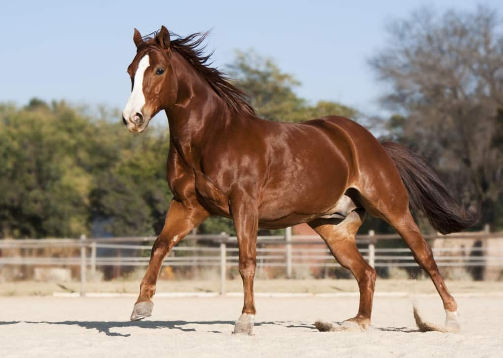

Quarto de Milha

-
A raça Quarto de Milha foi a primeira a ser desenvolvida na América. Ela surgiu nos Estados Unidos por volta do ano de 1600. Os primeiros animais que a originaram foram trazidos da Arábia e Turquia à América do Norte pelos exploradores e comerciantes espanhóis.
Os garanhões escolhidos eram cruzados com éguas que vieram da Inglaterra, em 1611. O cruzamento produziu cavalos compactos, com músculos fortes, podendo correr distâncias curtas mais rapidamente do que nenhuma outra raça. Com a lida no campo, na desbravação do Oeste Norte-americano, o cavalo foi se especializando no trabalho com o gado, puxando carroças, levando crianças à escola.